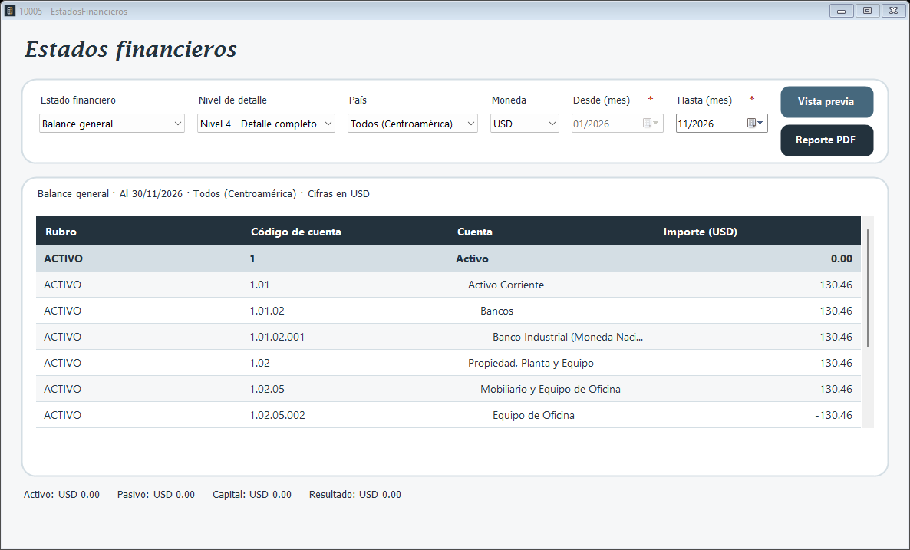

Genera el balance general, el estado de resultados y el flujo de caja (método directo) a partir de los saldos de las cuentas.

Estado financiero: balance general, estado de resultados o flujo de caja.
Nivel de detalle: de 1 a 4; cada cuenta padre muestra la suma de sus cuentas hijas.
País: un país o todo Centroamérica.
Moneda: convierte los importes con el tipo de cambio de Bancos al cierre de cada mes.
Desde (mes) y Hasta (mes): rango del estado; el balance general usa el mes final.
1. Elija las opciones.
2. Presione Vista previa para verlo en pantalla.
3. Presione Reporte PDF para abrir el reporte listo para imprimir o guardar.
La fecha inicial no puede ser mayor que la final. Si Bancos no tiene el tipo de cambio de un mes, el sistema lo avisa y no genera el estado.